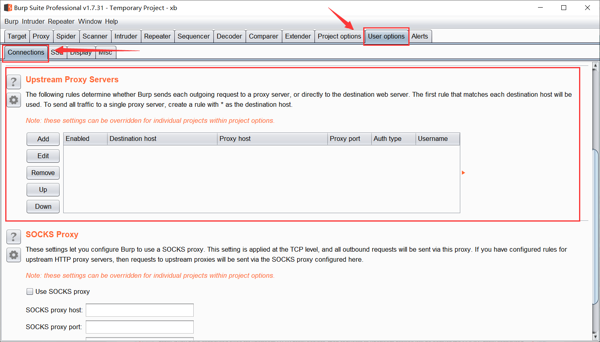
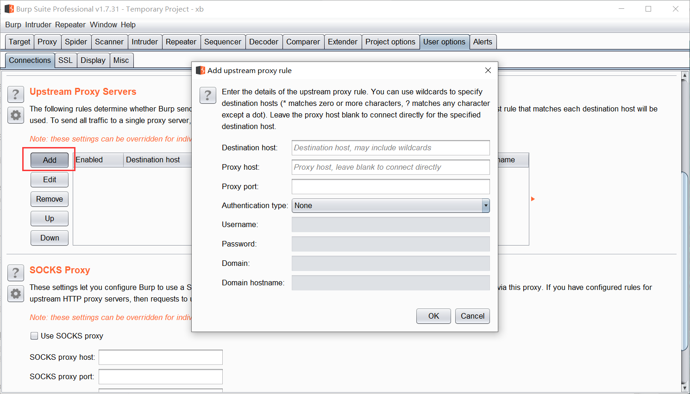
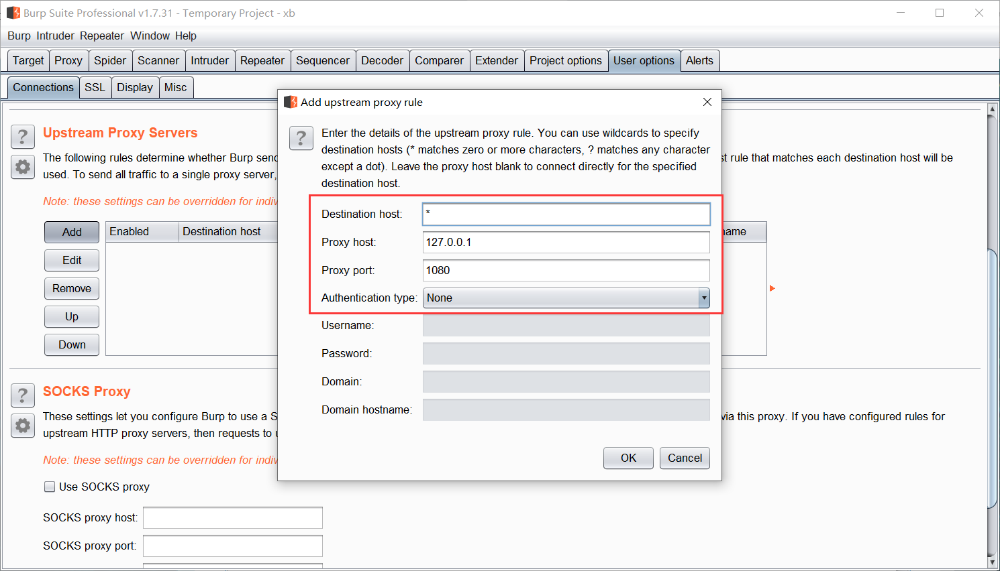

和勤奋的人在一起，你不会懒惰
多重代理的情形
在某些网络环境中，为了翻墙，浏览器已经设置了SSR的代理，但是如果想对国外的网站使用BurpSuite进行渗透测试，那怎么设置代理？ 这时候不能简单的把浏览器的代理设置为burpsuite，虽然能抓到包，但是却访问不了外网了，这时候该怎么办
我们首先设置浏览器的代理为BurpSuite以便能够抓包，然后为BurpSuite再设置一个上游代理(SSR)即可，这样访问外网时，请求包会先经过Burpsuite再走向SSR，最后经过SSR服务器到达外网
Upstream Proxy Servers
在BurpSuite的 User options 下的 Connections 页面中，有个 Upstream Proxy Servers 配置项

对外网进行抓包分析， 首先要设置浏览器的代理为BurpSuite，这一点是毫无疑问的
为了能正常访问外网，还需要设置BurpSuite的上流代理为SSR（127.0.0.1:1080）
点击 Upstream Proxy Servers 列表框左侧的 Add 按钮，打开 Edit upstream proxy rule 对话框，这里一共有8个设置项，一般情况下只需关注前4个

Destination host ：这里填入目标网站域名或者IP，支持通配符，在本例中，我直接填写 *
Proxy host ：填入SSR代理服务器的IP地址，即127.0.0.1
Proxy port ：填入SSR的代理端口，即1080
Authentication type ：这里选择认证类型，由于SSR本地代理无需认证，这是选择None
设置内容如下图所示，最后点击OK即可

这时候你会发现已经能够访问外网了，并且BurpSuite中也成功地抓取到了相应的请求包
你可以同时设置多个 Upstream Proxy Servers，在使用过程中，BurpSuite会按顺序将请求的主机与 Destination host 中设置的内容进行比较，并将请求内容发送至第一个相匹配的 Proxy server
因此，Proxy Server的顺序很重要，讲究个先来后到！